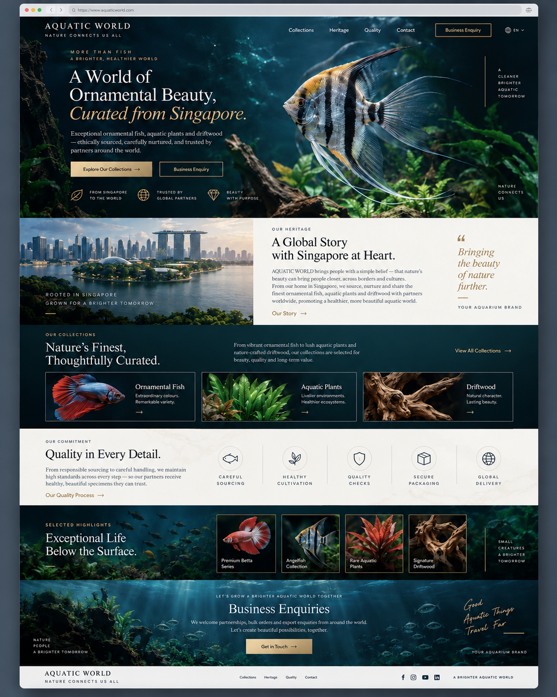

Premium Aquatic
Editorial Landing Page
Complete implementation handoff for the chosen cinematic underwater design — without hardcoded company or country data.
Design docs 100% · Website 0%
Open full reference ↗Design tokens ↗Site configuration ↗QA checklist ↗中文说明 ↗
Important: The image displays fictional example branding and claims. Verify real business content before publishing.
Aquatic World — Premium Aquatic Landing Page / Design Handoff v1.0
Status: Design selected by requester · Documentation handoff prepared · No website implementation or deployment performed.
Source of truth for visual direction: reference/selected-homepage-mockup.png.
Project intent: Turn the selected premium aquatic homepage concept into a reusable, configuration-driven site template for aquarium / aquatics B2B suppliers or related businesses.
Important:
AQUATIC WORLD, Singapore, the imagery, product labels, and marketing claims inside the AI-generated reference are visual/demo placeholders, not verified commercial facts. Do not copy those claims into production unless approved by the actual business. No brand, country, domain, phone, product availability, achievements, testimonials, or certifications may be hardcoded.
Start here
- Open
OPEN_ME.htmllocally in a browser for an offline, illustrated document navigator. No installation, server, account, or internet is required. - Inspect the selected mockup in
reference/selected-homepage-mockup.png. - Read
docs/00_PROJECT_BRIEF.mdanddocs/01_VISUAL_DESIGN_SYSTEM.md. - Read
docs/02_PAGE_STRUCTURE.md,docs/03_COMPONENT_INTERACTIONS.md, anddocs/04_RESPONSIVE_ACCESSIBILITY.md. - For developers or coding agents, continue with
docs/05_CONFIG_DATA_CONTRACT.md,docs/07_ENGINEERING_GUIDE.md, anddocs/09_AI_AGENT_IMPLEMENTATION_PROMPT.md. - Before deployment, follow
docs/08_QA_ACCEPTANCE.mdand the CSV checklists underqa/.
Files at a glance
| Area | Files | Purpose |
|---|---|---|
| Reference | reference/selected-homepage-mockup.png |
The approved direction for visual design; not a functional screenshot |
| Specifications | docs/00–docs/12 |
Scope, layout, UX, content, accessibility, engineering, QA and handoff |
| Tokens | tokens/design-tokens.json, tokens/design-tokens.css |
Proposed consistent visual design variables |
| Data examples | examples/*.json |
Generic, editable content and site configuration |
| Schemas | schemas/*.json |
JSON Schema contracts to validate configuration and homepage content |
| QA templates | qa/*.csv |
Evidence ledger, responsive test matrix, acceptance tracking and asset audit |
| Offline reader | OPEN_ME.html |
Browse the entire spec without external dependencies |
Locked design decisions
- Chosen direction: Luxury Nature Storytelling / Premium Aquatic Editorial.
- Visual motif: cinematic tropical freshwater aquarium imagery, deep ocean teal, restrained champagne-gold accents, off-white editorial panels, serif display headings and clean sans-serif text.
- Sequence: Header → Hero → Heritage → Collections → Commitment/Quality → Selected Highlights → Enquiry CTA → Footer.
- Primary action: Explore Collections; secondary: Business Enquiry. No shopping cart or checkout in v1.
- Branding: replaceable via data configuration; no business name baked into HTML, CSS, JavaScript, assets or SEO templates.
- Content: source and approvals required. Product gallery is not a live inventory feed.
- Deliverable here: documentation + approved screenshot reference, not website source code, API integration, public deployment or production-ready photographs.
Operational notes / 使用提示
此 ZIP 是给开发者、Figma 设计师或 AI Coding Agent 的完整设计规格。你选中的图片是视觉方向，不代表真实公司的产品、出口国家、认证或地址。Aquatic World 只是图片中的示范品牌，实际网站的品牌、地点、产品分类及内容都应该通过 JSON 配置更换。实现前先看 docs/10_DECISIONS_RISKS.md，上线前必须经过 qa/ 验收。
Progress: documentation package 100%; working website 0%; real business content approval pending.
已选定设计 — 文档使用说明
你选中的图片是 Premium Aquatic / Luxury Nature Storytelling。本项目要保留深海蓝 + 香槟金、真实感观赏鱼主视觉、大字标题、品牌故事、产品分类和询价入口。
最重要的决定：不要 hardcode 任何客户品牌，也不要把 Aquatic World 当作固定品牌。 画面里使用的 AQUATIC WORLD 和 Singapore 是示范内容。制作真正网页时，品牌、地区、Logo、CTA、图片、产品数据、联系电话和页尾资料全部由 configuration（配置）加载。换一家客户只需要换配置与核实过的资产，不应该修改页面组件。
推荐顺序
- 先打开
OPEN_ME.html，查看详细文档及所选设计图。 - 确认品牌、公司所在国家、产品类别、图像和实际联络渠道。
- 把
examples/site-config.example.json换成该公司的真实配置。 - 交给 Coding Agent，并附上
docs/09_AI_AGENT_IMPLEMENTATION_PROMPT.md。 - 先实现 Desktop + Mobile，再开发搜索／询价，最后按
qa/acceptance-checklist.csv验证。
特别注意
- 设计图内所有公司规模、品质保证、物流能力、认证及年份，未经公司确认一律不可视为事实。
- 不要为了视觉效果使用错误鱼种名称，照片必须建立 Asset Manifest。
- 询价按钮不可假装提交成功：没有可用 backend 时，必须使用经核实的 mailto 联系方式或者明确展示未启用状态。
- 先完成可读、可用、Responsive 的网站，再考虑动画。
- 本次交付只有设计文档包，没有擅自改动现有项目、GitHub 或部署。
00 — Project Brief & Design Contract
Mission
Translate the chosen reference mockup into a production-capable design specification for a rebrandable, business-to-business aquatic supplier landing page. Prioritize high-end presentation, verified supplier information, product discovery, and a working enquiry pathway. Use content configuration instead of brand-specific or geographic assumptions.
User/visitor groups
| Audience | Main question | Page answer | Primary route |
|---|---|---|---|
| Wholesaler / distributor | What categories can you supply? | Collection overview + request details | Collections → Enquiry |
| Retail shop purchaser | Do you handle trade orders? | Business capabilities only if verified | About / Enquiry |
| Aquarium or aquascaping professional | Can I find products by category? | Clear fish, plant and material imagery and labels | Collections |
| Business credibility reviewer | Is this a real, contactable company? | Legal profile, approved process, reachable contact | Heritage → Quality → Contact |
| Mobile prospect | Can I scan and contact quickly? | Concise hero, accessible navigation, stable CTA | Mobile menu → Enquiry |
Jobs to be done
- In under 5 seconds, convey what kind of business the site represents (audience and offering).
- In under 2 interactions, let a visitor reach a useful collection category.
- Present approved company provenance and responsible processing information without exaggeration.
- Provide a reliable enquiry route that acknowledges only confirmed delivery.
Scope v1
In: homepage, standard navigation and footer, configurable branding, categories/selected highlights, heritage storytelling, quality/process statements subject to approvals, contact CTA, fully responsive styles, metadata, keyboard-accessible interactions, lightweight static delivery, QA.
Out (unless separately commissioned): checkout, shopping cart, live stock pricing/availability, customer accounts, custom CMS, multiple supplier integrations, payment, automated export compliance assurances, live multilingual translation, unverifiable awards and claims.
Source of truth and precedence
- Business-approved factual data for names, labels, imagery, contact details, legal and marketing claims.
- Selected image reference for layout/style/composition only.
- This ZIP's specifications and design tokens for implementation details.
- Developer judgment for safe semantic HTML and accessible implementation when the static mockup conflicts with usability.
Success indicators (to measure after site exists)
- Accessible navigation and CTA flows across desktop and mobile.
- Zero confirmed misleading business claims.
- 100% required sections backed by valid config or explicitly hidden.
- Zero broken category links and zero false form-success messages.
- Web Vitals performance and accessibility gates in
08_QA_ACCEPTANCE.md.
Non-negotiable guardrails
- No hardcoding company name, location, export facts or inventory data in components.
- No unauthorized reuse of third-party photos or logos.
- AI-generated reference is a style target; it is not product availability proof.
- No live deployment, Git push or production content changes without distinct authorization.
- Content updates must not break headings, cards, responsiveness or keyboard interactions.
01 — Visual Design System
Approved visual signature
Direction: Cinematic aquatic elegance / Luxury Nature Storytelling. Dark underwater environments with large angelfish imagery; warm champagne-gold emphasis; editorial off-white narrative panels; high-density black-water gallery sections. The site should feel curated, sophisticated and business-focused—not childish, game-like or a crowded online shop.
The supplied mockup has an outer browser chrome frame; do not implement the browser bar as part of the website.
Color palette (proposed implementation tokens)
| Token | Hex | Role |
|---|---|---|
--color-ocean-950 |
#061C26 |
Navigation/hero/footer base |
--color-ocean-900 |
#0A3541 |
Secondary dark sections |
--color-ocean-800 |
#0C4450 |
Gradients, interactive backgrounds |
--color-gold-400 |
#DFC087 |
Primary actions, italic emphasis, dividing accents |
--color-gold-500 |
#C6A466 |
Hover/secondary accent |
--color-cream-50 |
#F6F4F0 |
Heritage and quality panels |
--color-ink-900 |
#10242D |
Text on light panels; button text on gold |
--color-slate-700 |
#43565B |
Secondary text on cream |
--color-fog-200 |
#C2D1D2 |
Muted supporting text on dark surfaces |
--color-white |
#FFFFFF |
Primary body text on dark surfaces |
Verified static pair contrast ratios (calculated from proposed solid hex values, not the photo layer): cream/ocean-950 ≈15.91:1; gold/ocean-950 ≈10.01:1; ink/cream ≈14.57:1; ink/gold ≈9.17:1; slate/cream ≈7.03:1. Re-test composites and text overlays on the actual photographs.
Typography
- Editorial display:
Georgia, optional licensed/approved serif family via CSS tokens. Main H1 approxclamp(2.5rem, 5vw, 5rem), responsive line-height1.05–1.14, controlled line-wrap. - Body/navigation:
system-ui, optionallyInterafter approving font delivery strategy. Body1rem–1.125rem, line-height1.55–1.7. - Eyebrow labels: uppercase sans-serif,
0.7–0.8rem,letter-spacing: 0.14em–0.22em. - Hero accent line: gold italic serif, not an image or font screenshot.
- Maintain typographic hierarchy and text scaling at 200% browser zoom.
- Don't bundle commercial font files; use licensed fonts or system fallbacks.
Layout and spacing
- Desktop content max width 1,200–1,280px; fluid gutters 24–40px.
- Header height ~76–88px; navigation inside hero on desktop, switch to solid high-contrast state while scrolling.
- Hero min-block-size ~620–720px at desktop, but adapt to short viewports and content without cropping text.
- Hero text ~45%; background photographic focal subject on right ~55%; dark gradient left ensures readable foreground text.
- Grid: 12-column desktop, 8-column tablet or CSS auto-grid, 4-column mobile; major split panels become one column on mobile.
- Spacing scale: 4, 8, 12, 16, 24, 32, 48, 64, 96px. Section padding desktop 64–104px, tablet 48–72px, mobile 40–56px.
- Cards: subtle borders and image overlays; radius 0–8px for polished editorial shape; no bubbly UI.
- Gold primary button: background gold, dark ink text, min 44px height, moderate horizontal padding, hover darker gold and strong focus ring.
- Outline button: transparent dark surface, gold outline, cream/gold text, 44px min touch height.
Imagery and composition
Hero: dominant angelfish-like fish to the right with dark dramatic green aquarium plants; subject must remain visible across breakpoints, not hidden by overlaid text. Heritage: business-approved city/facility/company image on left, not fabricated proof of premises. Categories: one authentic photo per category. Highlights: product thumbnails with confirmed species labels. Enquiry: underwater panorama with dark wash that leaves readable copy.
Motion
- Hover/focus transitions 150–250ms (opacity, border, slight translate); avoid continuous autoplay parallax or distracting bubbles.
- Card transform maximum about
translateY(-3px)under hover-capable devices only. - Respect
prefers-reduced-motion: reduce: remove scrolling animations and transforms where appropriate. - No reliance on scroll animation for content visibility; all main content visible without JS.
Avoid
- Gold text laid directly over a bright region of photography without a gradient.
- Generated pseudo-labels that imply verified exports, countries, quality certifications or years of experience.
- Excessively decorative paragraphs or handwritten slogans replacing useful factual content.
- Stretching low-resolution product thumbnails to hero sizes.
- Direct image export of the reference as the website itself (non-semantic, non-interactive, inaccessible).
02 — Homepage Blueprint / Information Architecture
Screenshot section mapping
| Order | Reference region | Section ID | Layout and content | Functional goal |
|---|---|---|---|---|
| 0 | Dark top bar | site-header |
Reconfigurable wordmark + tagline; Collections, Heritage, Quality, Contact; CTA; optional locale chooser | Orient visitor |
| 1 | Large photographic top | hero |
Fish image on right, one H1 + optional italic accent line, intro, two actions, optional approved proof points | Tell visitor what/why |
| 2 | Photo + cream panel | heritage |
Image left; heading, approved story and attributed quotation right | Humanize credible business |
| 3 | Dark teal 3-card area | collections |
Editorial title + intro + configurable category cards | Browse offering |
| 4 | Cream icon band | quality |
Short statement + 4–5 approved process/quality steps | Reduce uncertainty |
| 5 | Dark gallery/cards | highlights |
Intro + 4 product/feature cards with accurately linked images | Showcase examples |
| 6 | Underwater CTA panel | enquiry |
Headline, 1–2 lines of explanation, single main contact action | Convert enquiry |
| 7 | Light bottom strip | site-footer |
Approved contact links, brand, legal/privacy, navigation, confirmed socials | Support & compliance |
Section-level design decisions
Header
Logo/wordmark left, primary links right. CTA prominently outlined in gold. Locale icon only when multilingual copy actually exists; otherwise hide it. Header on wide screens may overlay hero with a readable backdrop. Mobile collapses to a button-labelled menu; opened drawer/dialog must have keyboard and focus behavior.
Hero
One editable H1 containing the value proposition, plus a separate stylized accent span. Both are text—not baked into the image. Headline should remain understandable if the line wrap changes. Primary CTA routes to collections; secondary CTA routes to enquiry. Three credibility items only if approved, else omit to avoid fabricated claims. Decorative sidebar labels should be CSS text only if informative, otherwise remove on small displays.
Mockup example (NOT approved business copy): “A World of Ornamental Beauty, Curated from Singapore.” Production headline should use {brand/location/offer} values approved for that specific client.
Heritage
Use a business-approved premises, founder, team, farm or genuine region image. Do not imply that AI-generated architecture or staff photo documents a real company. On mobile, put headline and copy before or alongside the image as appropriate; the quote is optional and requires an approved author/source.
Collections
Cards must be data-driven; do not assume every business sells Fish + Plants + Driftwood. Card fields: id, title, description, imageId, alt, href, order, enabled. Desktop screenshot uses three cards, but the component must gracefully support 1–6 and wrap or scroll accessibly. If more than 6, display top categories and a View All link. No horizontal mouse-only carousel.
Quality
Each process step has an icon, title, short verified copy and optional detail link. If a step cannot be supported by a source, hide it. Do not display unlabeled certification badges or fabricated claims.
Highlights
Thumbnail list of approved products/services/projects. Treat featured as editorial selection, not live stock, new arrivals or a transaction offer. If species are identified, labels must match documented sources. Use stable aspect ratios and object-fit adapted to the subject.
Enquiry
Default to a real contact link (mailto or approved contact route) until secure server-side enquiry handling is available. A mock form is never allowed to show a success confirmation. Headline plus compact CTA panel; ensure actionable controls remain visible on 390px-wide screens.
Footer
Brand, actual legal identity when authorized, navigation, contact method, privacy policy, actual licensed social account links, copyright year generated at build/runtime. No fabricated social networks or dead links.
Cross-page extension plan
Suggested routes (all values configurable): /, /collections, /collections/:slug, /about, /contact, /privacy. v1 docs prioritize homepage; additional route design and data integration should be specified before building catalogue depth.
03 — Component & Interaction Specification
Reusable component inventory
| Component | Props / data contract | States | Keyboard/accessibility requirements |
|---|---|---|---|
SiteHeader |
brand, navItems, cta, locales[] |
top, scrolled, menu-open | semantic <nav>, visible menu label, Escape closes, focus managed |
Wordmark |
name, tagline, logoAssetId? |
image/text fallback | linked home, meaningful accessible name |
Hero |
eyebrow, title, accent, body, imageId, actions[], proofPoints[] |
default, image fallback | h1 only, real text, sufficient overlay |
ActionButton |
label, href or action, kind |
idle, hover, focus, disabled | use links for navigation, buttons for actions; focus visible |
HeritagePanel |
heading, body, photoId, quote? |
image loaded/fallback | correct reading order and source reference |
CollectionGrid |
items[] |
0,1,3,6,overflow | cards are linked, no nested clickable elements |
CollectionCard |
title, description, imageId, href |
idle, focus, hover | alt text/thumbnail semantics; full-card link |
QualitySteps |
items[] |
0–5 | meaningful steps list, not pictograms only |
FeaturedGallery |
items[] |
empty/loading/ready | figure captions; 1-click detail, keyboard reach |
EnquirySection |
heading, description, cta |
contact-link or enabled form | no false success, error messages announced |
SiteFooter |
nav, contact, social, legal |
enabled data only | no dead or placeholder links |
Header states
- On page load desktop: hero overlay background, transparent/dark underlay (always high contrast).
- On scroll: fixed or sticky header may become solid navy with border; maintain visible logo and button and reserve layout space to avoid CLS.
- Mobile: wordmark left, labelled menu button right. Menu opens below header in an accessible overlay (not behind content); Escape closes; clicking link closes and navigates; restore focus to trigger when appropriate. Lock background scrolling only while overlay open. No horizontal overflow at 320–430px.
- If language chooser is not backed by translated content, hide it rather than offering broken routes.
CTA rules
- Hero primary → page section
#collectionsor category index path, derived from config. - Hero secondary → valid enquiry path or real mailto, derived from config.
- Card CTA → real collection detail/list page; if route is unavailable, omit the link/card or indicate not ready without deceptive affordance.
- CTA visual hierarchy: exactly one dominant filled gold action per context; outline is secondary.
- No custom approval modal for cosmetic UI changes; version control plus reviewable diffs/revert is preferred for design iteration. Deployment/production/business-data actions still require authorization.
Interaction states
Buttons: default, hover, keyboard focus, active, loading, disabled. A disabled action must expose a helpful reason and never redirect to an unrelated page.
Cards: subtle lift/highlight on hover; keyboard focus outline; touch tap directly.
Images: load fallback is brand-neutral gradient and actual alt text; no broken icon clutter.
Form (only if enabled): empty → invalid (field errors) → submitting → confirmed success OR actionable failure. Success means a server acknowledged a real enquiry, not merely a client-side click.
Motion and progressive enhancement
- CSS-first responsive components; JS enhances menus/form, not basic page visibility.
- Only enable transition when motion is allowed. No layout-affecting animations that cause reflow or CLS.
- Focus ring 2–3px visible over dark and cream backgrounds.
Component layout criteria
Hero: at desktop, text width 40–50%, main image focal point at 65–80% x-position; at mobile, overlay gradient must cover entire text area and crop safely.HeritagePanel: image/text each ~50% desktop, stacked mobile; quote becomes optional small aside.CollectionGrid: desktop 3 columns for screenshot fidelity; tablet 2; mobile 1, unless space comfortably supports 2 without cramped captions.QualitySteps: desktop 4–5 columns; tablet 2; mobile 1–2 depending actual text length; avoid microtype.FeaturedGallery: desktop 4 compact cards; tablet 2; mobile 1–2; no invisible items behind a decorative gradient.Enquiry: horizontal desktop, vertically centered on mobile; never overlap foreground copy with underwater focal animals.
04 — Responsive, Keyboard, Accessibility & SEO
Breakpoints (implementation defaults; content-driven refinement allowed)
| Viewport | Header | Hero | Collections | Heritage | Highlights |
|---|---|---|---|---|---|
| 320–479px | compact + accessible menu | text first, strategic photo crop, 1–2 CTAs stacked | single column | text/image stacked | 1 column or comfortable 2 |
| 480–767px | menu | slightly wider text, controlled crop | 1–2 columns | stacked | 2 columns |
| 768–1023px | nav depending width, else menu | compact split or overlay | 2 columns | 1–2 columns | 2 columns |
| 1024–1439px | complete nav | image-right split | 3 columns | split | 4 columns |
| >=1440px | max-width header content | cinematic hero, proper max-width | 3 columns centered | balanced | 4 columns |
Never assume viewport height: iPhone landscape and 200% browser zoom must not clip buttons or content. Use clamp(), %, min(), max(), minmax(), aspect-ratio, and constrained image position; avoid fixed text heights.
Quality targets
- No horizontal overflow at 320, 360, 390, 430, 768, 1024, 1440, and 1920 CSS px.
- Tap target recommended min 44×44 CSS px (larger than WCAG 2.2 24×24 minimum where applicable).
- Text on images uses dark overlay/background with at least 4.5:1 contrast for normal-sized text and 3:1 for large text; nontext focus/UI distinguishable.
- Full keyboard navigation: Tab, Shift+Tab, Enter, Space for buttons, Escape for menu; skip-to-content link; no focus trap outside modal/drawer.
- Proper landmarks (
header,nav,main,section,footer), one H1, sensible H2/H3 order. - Form labels associated, required status communicated, error summary provided and announced, privacy link reachable.
- Images convey accurate alt text: decorative aquarium background gets
alt=""or CSS background; species photo alt names only after labels verified. - Honor
prefers-reduced-motion, font scaling, high contrast and low-bandwidth preference where feasible.
SEO and discoverability
- Each page unique
title,meta description, H1, and canonical derived from approved brand/site URL config; no fictional domain or SEO claims. - Open Graph image must be an authorized site asset, not the screenshot mockup unless licensed and meaningful.
- Generate XML sitemap for actual published routes and crawlable links; implement redirects when replacing legacy URLs, preserving relevant route meaning.
- Add structured data (
Organization) only with confirmed legal identity/contact. Do not fake credentials/reviews. - Avoid injecting runtime-only article text if static generation can provide crawlable HTML.
Performance and runtime
- Real-user Core Web Vitals targets at p75: LCP <=2.5 seconds, INP <=200 ms, CLS <=0.1 (using accepted measurement methodology).
- Render hero as responsive AVIF/WebP with image dimensions and suitable
srcset/sizes; eager/high-priority for LCP image, lazy-load below-the-fold images. - Do not load huge full-resolution gallery images for tiny preview cards.
- Limit decorative scripts and avoid blocking third-party embeds and fonts.
- Header/menu/form failures must degrade gracefully; no broken first paint if JavaScript is disabled.
Mandatory test matrix
See qa/responsive-test-matrix.csv for device/interaction evidence rows. A generated screenshot alone does not prove these criteria.
05 — Configuration & Content Data Contract (No Hardcoded Brand)
Principle
All customer-specific strings, links, geographic claims, imagery and business capabilities originate in validated content/configuration data. Components render typed data only; switching from a hypothetical Aquatic World demo to another client must not require modifying components. Screenshot text is a demo, not production source data.
Suggested source layout
src/
components/ # Presentational site components; no customer data
templates/ # Homepage, collections, about, contact templates
theme/ # CSS custom property tokens, replaceable theme
content/
tenants/<tenantId>/
site.json # Brand, navigation, domains, locales, contact, feature flags
homepage.json # Section copy, approved claims, section visibility
collections.json # Arbitrary set of categories / display ordering
assets.json # Images and provenance
claims.json # Evidence, reviewers, validity window
A static single-tenant implementation may flatten these folders; contract stays the same. Multi-tenant separation is an optional architecture decision requiring proper isolation. Do not infer that this spec authorizes deploying multiple tenants.
Example configuration
examples/site-config.example.jsondemonstrates location-independent brand and contacts.examples/home-page.example.jsondemonstrates section data, hero headline and content with neutral placeholders.examples/collections.example.jsondemonstrates categories based on the aquatic design theme.schemas/site-config.schema.jsonandschemas/home-content.schema.jsondemonstrate useful validation constraints.
Key rules
| Source property | Read at runtime/build from | Must NOT live in component |
|---|---|---|
| Brand, trademark, tagline, logo alt | site.brand |
Static header/footer string |
| Country and regional claim | site.location |
Hero headline + world map copy |
| Business email, phone, legal identity | site.contact, site.legal |
Footer/CTA/JSON-LD |
| CTA labels/links | site.navigation, site.cta |
Hardcoded click handlers |
| Hero photo and alt | homepage.hero.imageId + asset manifest |
CSS fixed image path |
| Collections and routes | collections.items[] |
Four hardcoded categories |
| Heritage text + quotation | homepage.heritage |
Static marketing paragraphs |
| Quality points, country counts, credentials | homepage.quality + claim approvals |
Assumed proof points |
| Copyright & legal pages | site.legal, deployment metadata |
Fake © year or site name |
Trust and evidence model
Any statement that implies verified fact (export count, founded year, source sustainability, certifications, successful logistics, handling procedure, quoted customer, social metrics) must have:
- Stable
claimId; - Source link / internal document path / owner attestation;
- Approval status
approved(notproposed); verifiedOnand review date if the claim can become stale;- Copy exact enough to match evidence without overclaiming.
Render only approved claims. When uncertain, omit claim and rebalance layout instead of replacing it with another boast.
Safe configuration validation
- Verify required URL format and protocol: local route
/...orhttps://...; disallowjavascript:and untrusted injection. - Validate duplicate IDs, empty titles, stale assets, and order collisions.
- Nonempty business CTA target required before enabling interactive enquiry.
- Strings must be escaped at render; never inject
innerHTMLfrom third-party content without a deliberate sanitizer. - Maintain separation between
config(business facts) andstyle(theme tokens). - All mock copy flagged
demo_onlyor unapproved must be blocked from production builds.
Example brand swap acceptance test
- Supply a client fixture with entirely different logo, brand name, country, navigation labels, category count (one or five), and CTA paths.
- Build without editing any
src/components/*orsrc/templates/*file. - Search output HTML, JS and metadata for
AQUATIC WORLD, previous-client brand names,Singapore, demo URLs and demo credentials; expect zero unintended occurrences. - Visually verify header/hero/heritage/footer adapt without overflow.
- Render an empty optional quality section without phantom badge icons or claims.
06 — Photography, Content Rights, Asset Manifest
Critical separation
reference/selected-homepage-mockup.png = an AI-generated design reference, not a source of verified company facts. It can be used for design review, but it must not be decomposed into fake real company evidence. The screenshot contains realistic fish, Singapore skyline, visual badges, product descriptions, and a fictitious sample brand. Production assets must be supplied/licensed/created and approved independently.
Asset plan by section
| Slot | Expected visual | Suggested source size / safe crop | Approval |
|---|---|---|---|
hero.primary |
Premium angelfish / striking aquarium macro with subject on right | 2000×1200+ or responsive source set; text-safe left | Mandatory |
heritage.photo |
Real company facility/team or permitted region scene | 1400×1000+; meaningful license | Mandatory |
collections[n].image |
One accurately labeled collection example | >=900px long edge for cards | Mandatory |
highlights[n].image |
Correct species/product photo with traceable source | >=750px long edge | Mandatory |
enquiry.background |
Cinematic fish school / aquascape | >=1600px wide, dark-friendly crop | Optional |
brand.logo |
Licensed logo or text wordmark | SVG/approved raster, transparent where relevant | Mandatory |
social[n].icon |
Recognizable platform symbol | Platform-compliant icon | Optional |
Sizes are creative guidance, not strict image resolution QA requirements. Compression and art direction take priority over shipping massive files.
Asset manifest requirements
For each image: asset_id, local filename, source URL or owner, photographer/creator, rights/license, permission evidence, original context, subject/species, alt text, dimensions, crop/position, output variants, reviewer, approval. Template: qa/asset-manifest-template.csv.
Rights & factual fidelity
- Do not use photographs found by web search merely because they appear publicly accessible.
- Preserve original creator rights and attribution/usage limits.
- If an asset is AI-generated, mark it as illustrative and do not imply it is a genuine company farm, facility, employee, product offering or actual fish stock.
- Product captions must not invent species based on visual resemblance. When ambiguous, use approved category-level labels.
- Images must not imply shipping countries, health outcomes, certifications, or export practices not verified.
Implementation guidance
- Render real image elements for collection cards for accessible alt text.
- Hero can be a CSS background if decorative, but ensure appropriate LCP strategy; text remains in semantic DOM.
- Convert and resize approved images to AVIF/WebP with fallbacks as needed.
- Write valid intrinsic dimensions to reduce CLS; use
object-fit: coverfor cinematic panoramas andcontainwhere anatomical specimen visibility matters. - On mobile, choose different art-directed crop or alternate approved image so the primary fish is not cut off.
Reference file usage
The provided screenshot may be included in design documentation and private implementation QA. Do not claim it is a working website. The browser address in the screenshot is a visual placeholder, not an owned/verified production domain.
07 — Implementation Architecture & Engineering Checklist
Suggested v1 implementation
For the original goal of a light and maintainable site: static generated HTML + accessible CSS + minimal vanilla JavaScript driven by JSON content/configuration. Framework is optional; only adopt one if the actual application scope requires it. Keep build pipeline deterministic and page output server-rendered/static for SEO.
Modules
configuration -> schema validation -> content approval gate -> page builder
| | |
brand/settings stable IDs, links evidence + licensing
| v |
+------------> semantic HTML components <-------+
|
tokens/CSS and assets
|
static production build
|
browser/SEO/accessibility QA
Proposed repository structure (not included as implementation)
project/
public/assets/
src/components/{SiteHeader,Hero,Heritage,Collections,Quality,Highlights,Enquiry,Footer}/
src/templates/{Home,Collections,About,Contact}/
src/styles/{tokens,base,layout,components}.css
content/site.json
content/homepage.json
content/collections.json
content/assets.json
content/claims.json
scripts/{validate-content,build-site,validate-output}
tests/{unit,browser,accessibility}
docs/ # this handoff
Development sequence
- Set up component library and design tokens. Integrate an approved/placeholder brand config.
- Build semantic page regions with real HTML text. Add no images until text layout is acceptable at 390px and desktop.
- Add image manifest/source-mapped photos and photo overlays. Compare at 1440×900 + 390×844 using reference composition.
- Implement card dataset and responsive spacing; test 1/3/5 categories and long translated labels.
- Add accessible sticky header/mobile menu; test with mouse, touch and keyboard.
- Wire real collection navigation and enquiry CTA. Only enable a form after backend is operational.
- Run lint/build, content validation, routing test, browser QA, accessibility and Core Web Vitals measurement.
- Present before/after screenshot with review notes. Do not push, merge or deploy without requested permission.
Enquiry security contract
If using a form, its POST endpoint should handle server-side validation, bounded payload size, spam controls/rate limiting, CSRF mitigation as applicable, output encoding, secret management, PII retention policy, and minimal logging. Success UI must be shown only after authenticated/authorized backend acknowledgement of accepted delivery. Do not place third-party mail API secrets in client JavaScript. For v1 without backend, prefer an approved mailto or contact page and label the limitation.
Versioning & undo
User-friendly iteration principle: cosmetic design changes can be applied without repeatedly seeking approval, but every change should be reviewable and revertible via source control / snapshots. Use a dedicated branch, small logical commits and annotated before/after screenshots. Production publish, external-system writes or irreversible operations require explicit authorization.
Visual fidelity checkpoints
- Hero headline uses text and gold italic accent; avoid rasterizing the typographic block.
- Navy/teal photo depth stays legible; gold highlights do not become neon yellow.
- Heritage cream panel and photo align cleanly at desktop, stack without awkward crop on mobile.
- Collection cards appear editorial, photo-led, with dark overlay and gold arrow.
- Quality section uses off-white background, small line icons, simple dividers.
- Highlights row and enquiry band retain spacing in narrow screens.
Build review deliverables
- Link to running preview or reproducible localhost commands.
git diffand changed-file list.- Desktop/tablet/mobile screenshots vs this reference.
- Unit/component test results, Playwright/browser logs, accessibility output, content audit, missing-asset audit.
- Explicit status: Verified / Failed / Blocked; no unsupported 'all good' claims.
08 — Definition of Done & QA Acceptance Criteria
An image mockup is not an implementation. The entire homepage requires functional verification after coding; no tests in this package were run against a working implementation.
Release-gate policy
- G0 / Requirements: branding generic and editable; business owner approved actual launch content.
- G1 / Content: every logo/photo licensed; all business claims approved; current contact routes confirmed; no placeholder domain or false product availability.
- G2 / UX: screenshot fidelity judged with desktop/mobile captures, but legibility and responsiveness outrank pixel imitation.
- G3 / Function: all navigation routes load; menu accessible; CTA works; form success is server-confirmed.
- G4 / Quality: supported browsers, keyboard + screenreader smoke, no console/page errors, no horizontal overflow, performance acceptable.
- G5 / Release: rollback, route redirects and canonical sitemap verified; deployment explicitly authorized.
P0 critical acceptance checklist
| ID | Test | Passing evidence |
|---|---|---|
| BRAND-01 | Replace logo, name, tagline, country, domain, contact via data only | No source component change |
| BRAND-02 | Build has no residual demo brand/geo/URL text | Generated output grep/report clean |
| CONTENT-01 | All business/export/sustainability claims approved or hidden | Completed claim register |
| ASSET-01 | 100% shown photography has valid license + mapping | Asset manifest complete |
| NAV-01 | Header/footers and in-page anchors work | Browser interaction recording |
| NAV-02 | Mobile menu opens, closes on Escape, and focus behaves | Keyboard test video/report |
| CTA-01 | Primary CTA reaches collections; secondary reaches real contact | Valid destination or success evidence |
| FORM-01 | Form never gives false success when backend unavailable | Negative-path test |
| RESP-01 | No horizontal overflow in prescribed width matrix | Browser automation check |
| RESP-02 | Headline/buttons/gallery remain readable and tappable | Screenshots + interaction |
| A11Y-01 | Contrast, keyboard, labels, semantic heading audit | Axe or similar + manual test |
| SEO-01 | Per-page title/canonical/OG/sitemap use real approved brand | Output inspection |
| PERF-01 | RUM target or lab proxy measured, no hero block | Web Vitals report |
| QUALITY-01 | Zero runtime console/page errors and broken key requests | Browser/network report |
Suggested test fixtures
default-aquatic: 3 categories, full approved content, primary + secondary CTA.different-brand: entirely different wordmark/tagline/logo/country, 5 categories, long marketing headline.minimal: no optional proof points, quality section disabled, 1 collection card, no social links, mailto contact.unapproved: explicitly unapproved claim must be suppressed and logged at build.broken-asset: image missing; page remains readable, asset validator fails build.unavailable-backend: enquiry form disabled and fallback contact shown.
Test commands (examples, not claims of completed runs)
# Adapt to actual chosen build stack:
npm run lint
npm run test
npm run build
npm run test:e2e
npm run test:a11y
Status vocabulary
Verified: screenshot, logs and reproducible test evidence exist.
Failed: test executed and did not meet its criterion.
Blocked: required source asset, environment, authorization or backend unavailable.
Not run: no test executed; never re-label as Verified.
Use qa/acceptance-checklist.csv and qa/responsive-test-matrix.csv to record actual execution and artifact paths.
09 — Copyable AI Coding Agent Task Prompt (Implementation Not Yet Authorized)
ROLE: Senior UI/UX Engineer + Front-End Architect + Content Integrity Reviewer.
TASK: Implement a responsive, reusable business landing page based on the screenshot and specification in this ZIP.
VISUAL REFERENCE:
- reference/selected-homepage-mockup.png is the approved visual direction.
- Preserve its dark underwater / champagne-gold editorial style, proportions, panel rhythm and photo-first hero.
- The reference is a static AI-generated image, not runnable website source or verified company information.
READ FIRST:
- README.md
- docs/00_PROJECT_BRIEF.md
- docs/01_VISUAL_DESIGN_SYSTEM.md
- docs/02_PAGE_STRUCTURE.md
- docs/03_COMPONENT_INTERACTIONS.md
- docs/04_RESPONSIVE_ACCESSIBILITY.md
- docs/05_CONFIG_DATA_CONTRACT.md
- docs/06_ASSET_CONTENT_POLICY.md
- docs/08_QA_ACCEPTANCE.md
- tokens/design-tokens.json and examples/*.json
SCOPE:
1. Build header, hero, heritage, collections, quality, highlights, enquiry CTA and footer.
2. Use semantic HTML, CSS custom properties, minimal JS, and data-driven content.
3. Brand, location, texts, links, product categories, social URLs, contact data, imagery and SEO MUST be loaded from config/content.
4. Do not hardcode any client-specific brand (including 'Aquatic World' demo), country/location, domain, phone number, export reach, awards, years of experience, stock, scientific names or operational guarantees.
5. Never turn AI-generated reference claims, company facilities or fish types into production facts.
6. Only expose approved capabilities; hide sections with missing approval/data.
7. Implement reliable mobile navigation and working action links. Do not fake enquiry submission success.
8. Keep cosmetic iterations diffable and revertible. Do not deploy/push/merge without instruction.
DELIVERABLES:
- Editable source files + config examples + asset manifest.
- Working local preview instructions.
- Screenshots at desktop (1440x900), tablet (768x1024) and mobile (390x844).
- Browser no-overflow/keyboard/functional/console test results.
- Evidence-backed Completed/Failed/Blocked statuses; list all placeholders and approvals pending.
GATES:
- First output an implementation plan + unresolved content/asset dependencies.
- Then implement after explicit task authorization.
- Do not state QA passed without actual test output and screenshots.
- Escalate missing brand assets, legal info, image licenses and real contact backend rather than invent values.
Task interpretation guardrail
This file is a prompt for a future, separately authorized implementation. Merely generating a ZIP document does not authorize changing code or running development agents.
10 — Design Decisions, Open Questions & Risk Register
Confirmed design decision
Selected by user: the shown dark luxurious image with AQUATIC WORLD as demo placeholder. Specific visual characteristics are locked for the next design iteration; brand wording is deliberately not locked to any company.
| ID | Decision | Status | Owner |
|---|---|---|---|
| D01 | Choose premium underwater nature-storytelling direction | Selected | User |
| D02 | Do not hardcode any client brand or the sample brand | Required | User |
| D03 | No fixed country and no fake worldwide claims | Required safeguard | Implementation |
| D04 | B2B collections + business enquiry as primary paths | Proposed | User to confirm per client |
| D05 | Use JSON-driven content and CSS theme variables | Recommended | Engineering |
| D06 | Provide documentation ZIP before any code changes | Requested | This deliverable |
Open questions (do not block documentation)
| ID | Question | Safe temporary answer |
|---|---|---|
| OQ01 | What is the actual deployment brand/logo? | Show text Your Brand from config in development only |
| OQ02 | Is Singapore actually the client's base? | Remove geographic claims until configured and approved |
| OQ03 | Which claims or quality process are real? | Hide optional trust/process items |
| OQ04 | Do photos document real listed products? | Use licensed category-illustration photos + neutral descriptions |
| OQ05 | Do you need working enquiry form or mailto? | Verified contact link; form optional later |
| OQ06 | What framework/hosting stack is required? | Prefer small static build; confirm operational constraints |
| OQ07 | Which pages beyond homepage are in first release? | Plan routes, don't invent their contents |
| OQ08 | Is language switching needed? | Hide EN dropdown until translations exist |
Risk register
| Risk | Severity | Mitigation |
|---|---|---|
| AI mock shows fictitious staff/facilities/business claims | Critical | Require content approval; never publish as factual image |
| Generated animal photo inaccurately identifies species | High | Human species/content audit, explicit asset tracking |
| Brand or country hardcoded across sections | High | Config-swap integration test + build grep |
| B2B enquiry button goes nowhere / false success | High | Verified target or working secure backend; negative-path test |
| Dark photo obscures headline/CTAs | Medium | CSS left-to-right gradient, measured contrast on images |
| Hero image becomes huge LCP | Medium | Art-direction, responsive encoding, measured performance |
| Mobile header obscures content / scroll overflow | High | 320–430px viewport QA, sticky offset handling |
| Unapproved font or third-party photo redistributed | High | License check and manifest before production |
| Company claims become stale | Medium | Dates + approval register + scheduled review owner |
| Screenshot copied as flat background webpage | High | DOM text/components required; functional checks |
Escalation criteria
Pause release (not necessarily design work) when legal identity, operating location, shipping/certification claims, photo permission, submitted enquiry destination or client ownership of domain remains unconfirmed.
11 — Content Strategy & Copywriting Rules
Voice and tone
Premium, credible, clear and economical. The visual design may be poetic, but commercial text must be concrete. Headline in editorial serif; explanation in simple professional English. Avoid unprovable superlatives such as “world-leading,” “certified,” “100% sustainable,” “export to 50+ countries,” or “best quality”.
Recommended copy hierarchy
- Eyebrow: verified business descriptor (e.g. “ORNAMENTAL AQUATIC COLLECTIONS”).
- H1: product/service plus differentiator, not just abstract emotion.
- Accent line: optional poetic phrase approved for the brand.
- Supporting paragraph: one or two succinct sentences describing offering and intended customers.
- Primary CTA: action verb + object (“Explore Collections”).
- Secondary CTA: “Business Enquiry” or actual action label.
Fill-in templates (do not publish placeholders)
- Hero descriptor:
[APPROVED_BUSINESS_CATEGORY]. - Headline:
Discover [APPROVED_OFFER] for [TARGET_CUSTOMERS]. - Accent:
[APPROVED_BRAND_POSITIONING]. - Intro:
[BRAND_NAME] provides [PRODUCT_CATEGORIES] to [CUSTOMER_GROUP] in [APPROVED_MARKETS]. - Heritage heading:
Our Story / [APPROVED_BRAND_STORY_TITLE]. - Quality heading:
Our Approach(only publish steps backed by company approval). - Collection CTA:
Explore [CATEGORY_NAME]. - Enquiry CTA:
Ask About Our Collections.
Copy review checklist
- Can we prove every factual claim?
- Does a sentence imply that an illustrative photo depicts a real workplace or stocked specimen?
- Are fish names derived from source metadata rather than guesswork?
- Is the primary headline clear to a first-time buyer in five seconds?
- Can visitor reach contact from mobile header without scrolling to footer?
- Do CTA labels describe the destination honestly?
- Is placeholder content excluded from the production build?
Editing workflow
Content author writes → business owner approves → evidence reference recorded → copy merged into JSON configuration → build rejects unapproved content → QA screenshot compares rendered copy and responsive line breaks.
12 — Phased Implementation Roadmap & Exit Gates
Phase 0 — Content & source preparation (P0)
- Approve logo, legal business identity, country, headline, contact routes, intended audiences.
- Audit photo rights, species captions and optional brand claims; fill
qa/asset-manifest-template.csvandqa/claim-approval-register.csv. - Decide whether catalogue routes and real contact endpoint exist.
- Exit: zero unknown mandatory brand/contact fields for the planned release.
Phase 1 — Visual system and static homepage (P0)
- Load tokens + set up config validation.
- Implement header, hero, heritage, collections, quality, highlights, enquiry and footer with real DOM.
- Create responsive variants and visual snapshots; keep reference image supplied only as the design target.
- Exit: no static brand/geo values in templates; desktop/mobile preview matches section rhythm.
Phase 2 — Navigation, data and enquiry flow (P0)
- Ensure every rendered card and CTA has a valid target.
- Implement menu states, accessible anchors and optional approved enquiry backend.
- Add real metadata, canonical pages, privacy link and content approval checks.
- Exit: main conversion path working and no false-success state.
Phase 3 — Cross-browser QA and polish (P0/P1)
- Audit responsive sizes, 200% zoom, keyboard, reduced motion, contrast, missing images, offline failure response and lighthouse/real user performance where accessible.
- Review copy with business owner and record Verified/Failed/Blocked.
- Exit: all P0 gates green with evidence; no outstanding critical claim/rights risks.
Phase 4 — Optional launch (requires new authorization)
- Set up hosting, SSL, owned domain, verified analytics choices, backup, redirect map and rollback plan.
- Production deployment and any Git push/merge happen only under a distinct request.
- Exit: release evidence, rollback runbook and approved contact routing.
Change control
A new brand, new location, updated product assortment or different photo set should be a data/config edit, not a component rewrite. A new major layout concept should be versioned as a design revision and compared against the selected screenshot so it can be reverted.
Progress semantics
Documentation = 100% once this package passes integrity checks. UI implementation = 0% until a working site is built and tested. Company content approval = Pending; no QA claim is made merely from writing this document.